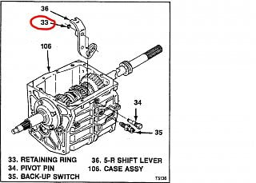

-
Hello,
I am looking for any ideas that experienced individuals may have had with the following …
My back-up (reverse) lights do not light up when the car is shifted into reverse.
The car is a 1985 300ZX Turbo GL with a stock 5-speed manual transmission and shifter.
What I do know:
1) While having my transmission and rear differential fluids changed on a friend's lift, I decided to remove (unplug and unscrew) the light switch from the transmission case and check it for continuity. When I depressed the spring button on the end that goes into the case, I confirmed continuity. The switch is therefore good.
2) Without installing it back into the transmission case, I plugged it back into the wire connector, climbed into the car and turned the key to the second position, got out of the car and went under it to the now free-hanging switch. My friend stood behind the car to see if the lights came on when I pressed the switch as I did previously. The lights came on. All the wiring is therefore good.
3) OK, so I now felt it might have just been a bad connection on the plug connector, so I squeezed the contacts to better the electrical connections. I then repeated step two to confirm everything. The lights once again worked.
4) After re-installing the switch to the case I tried again to light them in reverse gear. They did not light up. The problem is definitely mechanical, and somewhere in either the transmission or the shifter.
Any suggestions as to what I should be looking for to correct this?
Thank you.Last edited by NewJerseyZ; 11-14-2016, 12:01 PM. -
I can only confirm that my 84T has had the same issue. It's also the BW T5 trans and unfortunately i gave my other T5 away before
i thought to take the top off to observe the inner mechanism that activates the switch. Not sure if it just engages the shifter fork or what.
Here is the manual with exploded diagrams: http://www.racetuners.com/wp-content…1/t5manual.pdf section 4-1 is for NWC T5's.
When i first had the problem, i came to the same conclusion you did. Switch was good, it just wasn't being properly engaged anymore.
Back then I used a grinder to lower the face of the switch so that it would thread into the transmission about ~1mm further and that worked. But didn't answer the question of why.
The tip of the switch didn't look worn and iirc a new switch had the same issue, so i assumed it was something internal to the transmission that was worn.
But here it is several years later and my reverse lights are out again. Not sure if the switch finally died or what it is.
In a month or two the T5 is getting replaced with a 30A and i'll take it apart then to have a look-see, but i know that worn't help now.
84 AE/Shiro #683/Shiro #820/84 Turbo-
 #2.1NewJerseyZ commentedThank you for your reply, as well as some insight.
#2.1NewJerseyZ commentedThank you for your reply, as well as some insight.
You claim that removing about 1mm of metal from the flat face of the switch allowed it to screw deeper into the body, and that made it work. I suspect (like you) that it allowed whatever gets pushed towards the switch to make contact, could now push the button that much farther in. For me, that might be my only remedy, as I'm not about to go and swap transmissions as you intend to. But at least you'll have a better take on what's happening if you should open it up. I doubt it's the shifter, since it's too far back from the switch. However it might be the reverse shift lever, as described from your link (thanks). I'm also wondering if keeping the car in gear whenever parked might have some effect --- I usually keep it in reverse as a second safety. Well, for now it looks like shaving the face down will be my new project.
Thanks again.Last edited by NewJerseyZ; 11-15-2016, 05:52 AM.
-
-
I have a similar problem with the 30A in my 88T, if I wiggle the shifter the back up lights will go on and off, suspect something is worn inside the transButter (credit where credit is due): "You have this "gift" where you can make cooking a Hot Pocket seem like you need a certain wavelength microwave and involve brown mustard." -
Number 33 is a concave spring clip. It pushes on the arm to hold it in place.
When I took my T5 apart, I found that the clip had started to flatten out and the arm was able to shift side to side.
 -
Thanks Mike, what you said helps explain a great deal. First, it explains why this condition takes some time to show up, as the clip would need time to lose its tension. Also, it may explain why an initial fix as with Z_Karma only lasted for a time and then re-emerged. It might also explain why someone such as myself would see this happen --- I normally leave my car in gear when parked (as long as it's on level ground) so as not to have a potential lock-up occur with my parking brake. (You guessed it, that gear was REVERSE.) This would be like keeping a spring under tension; eventually it loses its ability to return to its initial springiness.

Copyright © 2006–. All rights reserved. Privacy Policy
Comment